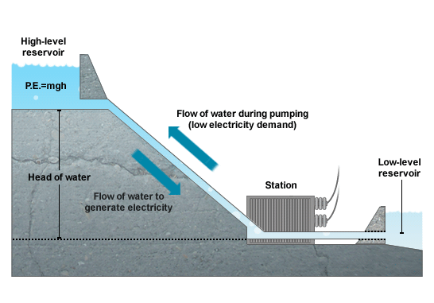

Quick Links
More Hypropower Information
How it is produced
How it works/produced
Mechanical energy is created when moving water spins the rotors on a turbine. The turbine is connected to an electromagnetic generator which produces electricity when the turbine spins.
There are three major types of hydro plants:
Impoundment facility (Use of dams)
It is the most common type of hydroelectric power plant. An impoundment facility, typically a large hydropower system, uses a dam to store river water in a reservoir. Water released from the reservoir flows through a turbine, spinning it, which in turn activates a generator to produce electricity. The water may be released either to meet changing electricity needs or to maintain a constant reservoir level.
Impoundment Pumped storage facilities (Presence of a lower reservoir)
It stores energy by pumping water uphill to a reservoir at higher elevation from a second reservoir at a lower elevation. When the demand for electricity is low, a pumped storage facility stores energy by pumping water from a lower reservoir to an upper reservoir. During periods of high electrical demand, the water is released back to the lower reservoir and turns a turbine, generating electricity.
Pumped storage Run of river facilities (Diversion)
This channels a portion of a river through turbines. It may not require the use of a dam.

Diversion
Hydropower Applications
Electricity
Hydroelectricity is one of the most important sources of energy in the world. Hydroelectricity is one of the cheapest and non-polluting sources of power. Though it can cause ecological damage initially it has better climate compatibility than other major forms of energy like nuclear, coal, gas and others.
Energy storage
There is 90 GW of Global Pumped Hydro Storage already existing in the world and with increasing Solar and Wind Energy, this Capacity is only going to grow. The main use of Pumped Hydro Storage is for Grid Energy Storage. Electric Utilities are the main customers of this Technology using Pumped Hydro Storage for:
Load Balancing
Storing Power during Low Usage Periods and Generating Power at High Usage Periods
Reducing Capital Investments
Peak Power plants like Natural Gas Combined Cycle Plants are much more expensive to run than normal Thermal and Nuclear Energy Plants
Agriculture
Hydropower was used in ancient times for producing flour from grain and was also used for sawing timber and stone, raised water into irrigation canals.
Industrial Use
Hydropower was used earlier for some industrial applications such as driving the bellows in small blast furnaces and for extraction of metal ores in a method known as hushing.
Hydropower Advantages
-
Hydropower is fuelled by water, so it's a clean fuel source, meaning it won't pollute the air like power plants that burn fossil fuels, such as coal or natural gas.
-
Hydroelectric power is a domestic source of energy, allowing each state to produce their own energy without being reliant on international fuel sources.
-
The energy generated through hydropower relies on the water cycle, which is driven by the sun, making it a renewable power source, making it a more reliable and affordable source than fossil fuels that are rapidly being depleted.
-
Impoundment hydropower creates reservoirs that offer a variety of recreational opportunities, notably fishing, swimming, and boating. Most water power installations are required to provide some public access to the reservoir to allow the public to take advantage of these opportunities.
-
Some hydropower facilities can quickly go from zero power to maximum output. Because hydropower plants can generate power to the grid immediately, they provide essential back-up power during major electricity outages or disruptions.
-
In addition to a sustainable fuel source, hydropower efforts produce a number of benefits, such as flood control, irrigation, and water supply
Hydropower Disadvantages
-
Significant impact to the environment as it affects the ecosystem especially the aquatic ecosystem. The dams developed across the rivers can disturb aquatic life and lead to their large scale destruction. There is a chance that fish and other water animals may enter the penstock and ultimately the power generation turbines where they will be killed. Dams can also disturb the mating seasons and mating areas of the water animals.
-
Disrupting habitat for wildlife and landscapes. Plant and animal life around rivers thrive due to continuous fresh flowing water in the river. Due to construction of the dams lots of areas have to be cleared that disrupt the plant and animal life. In many cases even a number of trees have to be cut that destroys not only the plant life but also the animals dependent on them
-
Displacing local communities due to flood and even a potential risk of claiming lives. Because these dams take up such a large area, it is often necessary for humans to relocate. It is not easy to convince people to uproot their lives and businesses. Often they are not compensated fairly for their land and the inconvenience. This creates large scale opposition and revolts against construction of the dams.
-
Building the power plant is expensive. The initial cost of the construction of the hydroelectric power plants is very high. It also takes long time to construct the plant. Lots of designing, planning, and testing goes into the construction of the dams. Each dam is unique in itself so the designs cannot be standardized.
-
Drought depending on how much water is available.